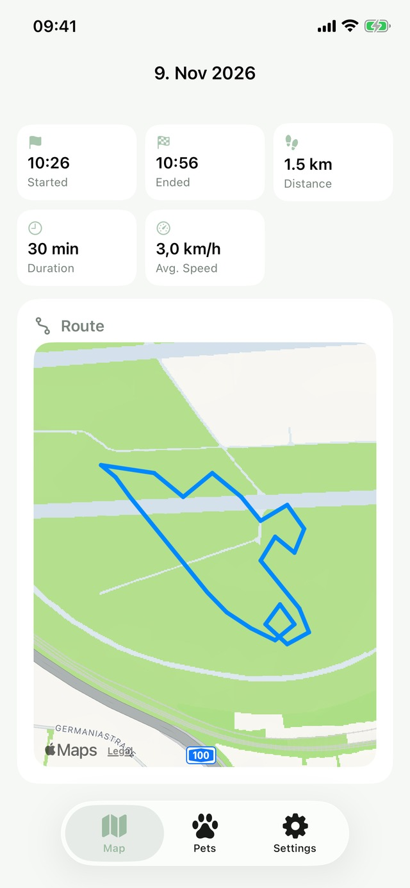
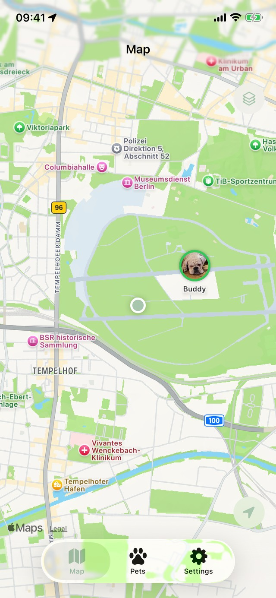
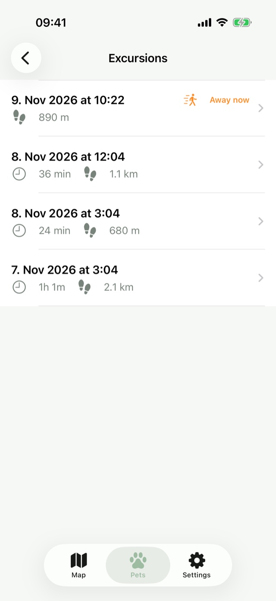
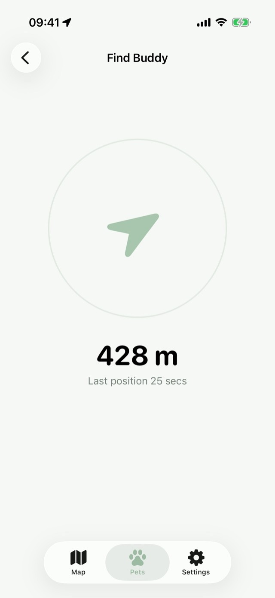
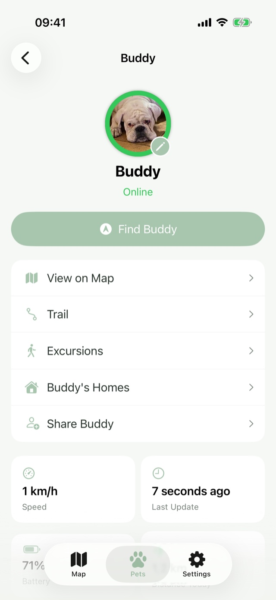
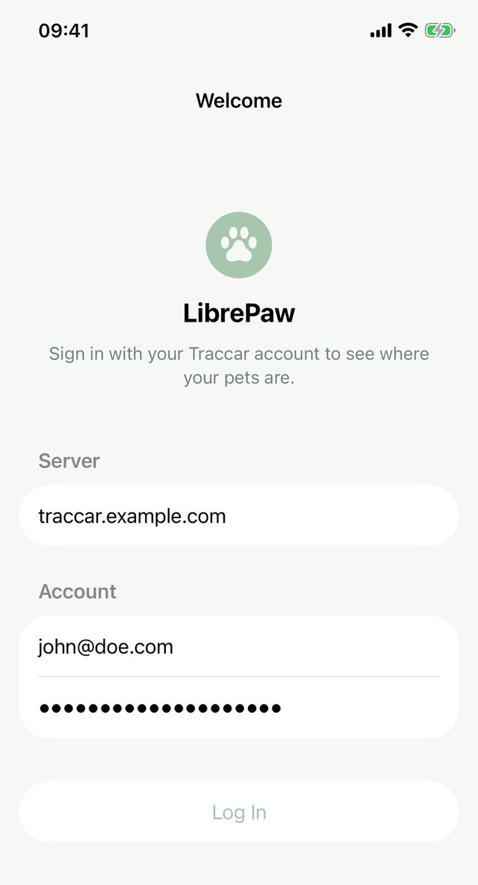

A Traccar client, built for pets
You already run Traccar. It just never had a good app for your pets.
Traccar is a great self-hosted tracking platform, but its own web UI and generic client apps are built for fleets, not for a dog that jumps the fence or a cat that slips out the door. LibrePaw is a free, native iOS app built specifically for pets, on top of the Traccar server you already have.
Point it at your own Traccar server and sign in. No account with us, because there is no "us" to have one with.

Everything Traccar's own UI leaves out for pets

Live map
Every pet's last known position at a glance, their own photo right on the pin, plus your own location for scale, no fleet-management clutter.

Excursions & Trail
Set a home location and LibrePaw quietly logs every trip away and back, distance, duration, and the exact route, drawn right on the map, so you can finally see where an outdoor cat actually goes on their rounds, not just that they made it home.

Find Pet
An AirTag-style compass arrow and live distance reading, no extra hardware, no separate app, just point your phone and walk.

Household sharing
An admin account can share a pet with the rest of the household by email, right from the app, everyone sees the same live position and history.
Which tracker to buy
LibrePaw works with any Traccar-supported GPS tracker, but the Mictrack MT710 is what this project is built and tested against: small enough for a collar, a battery that actually lasts, and a reporting interval that works well with the excursion and trail logging above.
Want a lower profile on the collar? A more compact replacement mount for the MT710, printable in flexible TPU, is up for download on Printables.
What's next
An Android app is in planning. If LibrePaw would be useful to you there too, that's good signal, say so on GitHub.
Still just Traccar underneath
LibrePaw doesn't run a backend, store your pets' positions, or ask you to sign up for anything. It's a native SwiftUI client for Traccar, the open source, self-hostable GPS platform that already supports hundreds of cheap GPS trackers. Point LibrePaw at your own Traccar server and every home, excursion, and photo it shows you is a plain Traccar geofence or device attribute, visible in Traccar's own web UI too if you ever want to check.
No subscription. No app-maker sitting between you and your pet's location. If you ever want to leave, your data was never anywhere but your own server to begin with.
Found a bug, or have a feature you'd like to see? Open an issue on GitHub, pull requests are welcome too. Source available under the MIT License.

Free, and will stay that way
LibrePaw costs nothing and always will. If it's useful to you and you'd like to say thanks, a coffee is always appreciated, but never expected.
Buy me a coffee